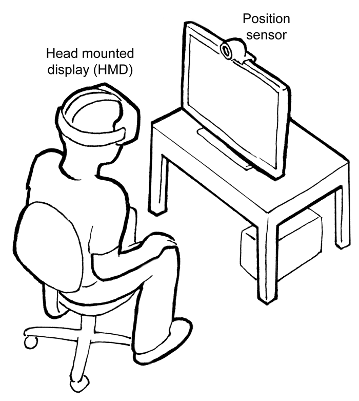

{{DefaultAPISidebar("WebVR API")}}{{Deprecated_Header}}
WebVR provides support for exposing virtual reality devices — for example, head-mounted displays like the Oculus Rift or HTC Vive — to web apps, enabling developers to translate position and movement information from the display into movement around a 3D scene. This has numerous, interesting applications, from virtual product tours and interactive training apps to immersive first-person games.
Any VR devices attached to your computer will be returned by the {{DOMxRef("Navigator.getVRDisplays()")}} method; each one will be represented by a {{DOMxRef("VRDisplay")}} object.
{{DOMxRef("VRDisplay")}} is the central interface in the WebVR API — via its properties and methods you can access functionality to:
A typical (simple) WebVR app would work like so:
In addition, WebVR 1.1 adds a number of events on the {{DOMxRef("Window")}} object to allow JavaScript to respond to changes to the status of the display.
Note: You can find a lot more out about how the API works in our Using the WebVR API and WebVR Concepts articles.
The WebVR API, which was never ratified as a web standard, has been deprecated in favor of the WebXR API, which is well on track toward finishing the standardization process. As such, you should try to update existing code to use the newer API instead. Generally the transition should be fairly painless.
Additionally, on some devices and/or browsers, WebVR requires that the page be loaded using a secure context, over an HTTPS connection. If the page is not fully secure, the WebVR methods and functions will not be available. You can easily test for this by checking to see if the {{domxref("Navigator")}} method {{domxref("Navigator.getVRDisplays", "getVRDisplays()")}} is NULL:
if (!navigator.getVRDisplays) {
console.error("WebVR is not available");
} else {
/* Use WebVR */
}
Many WebVR hardware setups feature controllers that go along with the headset. These can be used in WebVR apps via the Gamepad API, and specifically the Gamepad Extensions API that adds API features for accessing controller pose, haptic actuators, and more.
Note: Our Using VR controllers with WebVR article explains the basics of how to use VR controllers with WebVR apps.
The WebVR API extends the following APIs, adding the listed features.
VRDisplay that the gamepad is controlling the displayed scene of.true).You can find a number of examples at these locations:
This API was specified in the old WebVR API that has been superseded by the WebXR Device API. It is no longer on track to becoming a standard.
Until all browsers have implemented the new WebXR APIs, it is recommended to rely on frameworks, like A-Frame, Babylon.js, or Three.js, or a polyfill, to develop WebXR applications that will work across all browsers [1].
Navigator.getVRDisplays{{Compat("api.Navigator.getVRDisplays")}}